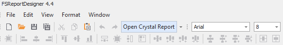

Designer Customizations
In diesem Kapitel werden die vorgenommenen Customizations am WinForms DevExpress Report-Designer beschrieben. Standardmäßige Funktionalitäten sind in dieser Doku nicht eingeschlossen - hierzu sollte die offizielle DevExpress-Dokumentation beansprucht werden.
Einige der durchgeführten Customizings betrifft Custom Controls. Diese sind allerdings größtenteils unabhängig des Report-Designers relevant und werden vollständig in ihrem eigenen Kapitel beleuchtet. Hier wird lediglich das Speicherverhalten der Embedded Subreports angesprochen, da es sich hierbei um custom Logik ausschließlich für den WinForms-Designer handelt.
Standalone-Ausführung der FSReportDesigner.exe
Die FS-Customizations werden via eines Launchers (FSReportDesigner.exe) auf den standardmäßigen Report-Designer angewandt. Aus diesem Grund müssen DevExpress Reports über diesen Launcher editiert werden.
Die entsprechende .exe ist auf oberster Ebene im Installationsverzeichnis zu finden, also "\Framework Studio X.Y.0.0\FSReportDesigner.exe".
Diese .exe lässt sich auf beliebige Weise öffnen (unten genauer erläutert). Wenn die geöffnete Datei sich nicht in einem Report-Verzeichnis befindet und der Pfad zu diesem nicht als Argument angegeben wurde, erscheint folgende Meldung:

"Yes" öffnet einen Verzeichnis-Auswahldialog, in dem sich ein Report-Verzeichnis auswählen lässt. Falls es sich um eine valide Auswahl handelt, wird der Report so gehandhabt, als ob er sich in diesem Verzeichnis befinden würde. Alle vom Report-Verzeichnis abhängigen Features stehen dann zur Verfügung.
"No" oder ein Abbruch der Auswahl startet den Designer völlig standalone. Custom Controls stehen noch zur Verfügung, aber features, die von Interoperabilität mit anderen Report-Dateien abhängen (z.B. Open Crystal Report) sind nicht nutzbar.
Direkter Aufruf
Bei einem direkten Aufruf der FSReportDesigner.exe, z.B. per Doppelklick, oder beim Aufruf mit einer ungültigen .repx-Datei, wird ein Auswahldialog für eine .repx geöffnet.
Ein Öffnen einer .repx-Datei per Windows file association oder durch drag & drop einer .repx-Datei auf die .exe öffnet die besagte Datei und verhält sich ansonsten identisch.
Wichtig zu wissen bei all diesen Varianten ist die Tatsache, dass bei einem so aufgerufenen standalone edit keine Datenquelle zur Verfügung steht. Die Datenquelle verlässt sich auf direkte .dll-Dateien und einen Interface-Typen aus FS, welche bei dieser Startweise nicht gefunden werden können.
Kommandozeile-Argumente
Der FSReportDesigner ist von der Kommandozeile aus granularer aufrufbar. Die folgenden Argumente stehen zur Verfügung (Vollständige Angabe aller Argumente erlaubt das vollständige FSReportDesigner-Featureset):
- 'r'/'report': Muss in der Kommandozeile angegeben werden. Definiert den voll qualifizierten Pfad zu der zu editierenden .repx-Datei.
- 'd'/'designer': Bestimmt den voll qualifizierten Pfad zur .exe des Crystal Designers, um features wie "Open Crystal Report" zu ermöglichen.
- 't'/'type': Der voll qualifizierte type name der Datenquelle, z.B. 'NV.ERP.MM.Sales.rptSalesDocument_Rptx'
- 'a'/'assembly': Der Name der assembly-Datei, die den bereits angegebenen Typen beinhaltet, in diesem Beispiel also 'NV.ERP.MM.Sales_RDT.dll'.
- 'f'/'folder': Das Verzeichnis, welches die benötigten Assembly-Dateien beinhaltet - üblicherweise '\bin\' im Compile-Verzeichnis.
- 'l'/'locked': Setzt den report in einen readonly-modus, welcher Änderungen und das Speichern verhindert.
Open Crystal Report
Wenn beim Öffnen des Designers bekannt ist, dass ein ihm zugeordneter Crystal-Report existiert und ein Crystal-Designer konfiguriert ist, wird ein zusätzlicher Button "Open Crystal Report" im DevExpress Report-Designer generiert.

Bei dessen Betätigung wird im Hintergrund der zugeordnete Report im readonly-Modus im Crystal-Editor geöffnet.
Hierfür wird der in den Einstellungen hinterlegte Pfad des Crystal Editors genutzt.
Embedded Subreports
Embedded Subreports sind Status-synchronisiert mit ihrem Quellreport.
Das bedeutet konkret, dass jede Änderung an einem Embedded Subreport im Status des Hauptreports widergespiegelt wird.
Zusätzlich werden beim Speichern Haupt- und Subreport immer gemeinsam gespeichert, egal, wie viele Subreports geöffnet sind - ein Save auf einem der Tabs führt auch automatisch einen Save für alle anderen aus.